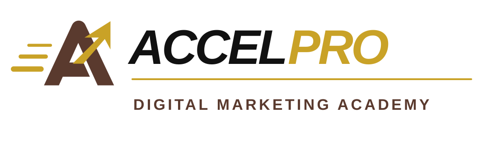

WEEKS 1–2
STAGE 01Choose
- Select a realistic niche
- Define the target audience
- Evaluate affiliate offers
- Choose one offer to test
One clear direction and one offer to test.

Affiliate Marketing ProgramA 12-week guided implementation program for salaried professionals who want to choose an offer, build the system and launch a real affiliate marketing experiment.
Build and launch a functioning funnel yourself. Sales, commissions and income are not guaranteed.
The goal is tangible progress you can inspect, test and improve.
Each stage ends with something concrete you can use in the next.
One clear direction and one offer to test.
A working first version of your affiliate funnel.
Your affiliate funnel is live and testable.
A tested funnel and a clear improvement plan.
12 × 2-hour live hands-on sessions
24 hours of live classroom training
Session recordings available for 1 year
Affiliate niche selection framework
Affiliate offer selection framework
Funnel-building templates
Implementation checklists
AI-assisted content guidance
Simple automation guidance
Traffic experiment framework
Tracking and measurement framework
12 hours of scheduled doubt-solving / implementation support
With 30+ years of professional experience and hands-on work in AI and digital solutions, I focus on practical implementation over theory.
I help professionals cut through the noise, build the right system and test it in the real world.
You'll build the system yourself with live guidance, practical frameworks and scheduled support.
12-week guided implementation program
Ask About the Next CohortAttend live sessions or watch recordings, complete exercises and plan approximately 3–5 additional hours each week to implement.
Register with suitable affiliate platforms, create required accounts and follow platform and advertising policies. You pay for any optional domain, hosting, advertising or paid software.
No guaranteed income, affiliate approval, traffic, leads or sales. This is not done-for-you advertising or unlimited one-to-one consulting.
Advertising spend, domains, hosting, third-party software fees, tax advice, legal advice and investment advice are not included.
Full refund available only before the first live session. Once the program starts, no refund will be provided.
Yes. This program is designed for professionals who are new to affiliate marketing but are comfortable learning digital tools.
No advanced technical skills are needed. You should be comfortable using the internet, basic digital tools and following step-by-step instructions.
Plan for the live session plus approximately 3–5 additional hours per week for implementation.
Yes. Niche and offer selection are part of the program. You will be guided to choose one realistic niche and one affiliate offer to test.
No. The program helps you build and launch a working affiliate funnel. Income, sales and commissions depend on many factors outside the program's control.
Ask about the next Affiliate Funnel Launch Program cohort.
Message Me on WhatsApp